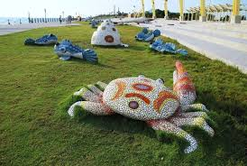

假日班企管四甲 S0905120 陳麗惠
旗津風車公園
旗津風車公園它銜接旗津漁港的觀光步道，扮演過港隧道進入旗津門面的第一個海岸印象景點，
旗津擁有豐沛的風力資源，七座造型獨特的三葉式風車面對遼闊的海面不停轉動，
園區內有觀海看台及表演廣場，造型獨特又可愛的海洋生物拼貼創作，既生動又有趣，
堪稱旗津最療癒的景點。若騎單車到此，約為旗津地區的中段處，剛好可稍作休息。
從風車下方就能看到海面上襲來一波波巨浪，打在岸邊激起滔天浪花，十分壯觀。

連到首頁
連到第三頁
連到我的課程感想